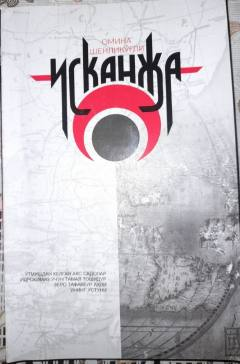

ASBolalik xotiralari va oilaviy muhabbat haqidagi samimiy hikoya.
Kitob 1946-yilda boshlangan voqealarni tasvirlab, bir qishloqda o'sgan qiz bolaning bolalik xotiralari, oila a'zolari bilan munosabatlari va birinchi his-tuyg'ularini hikoya qiladi. Asarda qishloq hayotining go'zalligi, aka-opa muhabbati va yoshlik sog'inchi kuchli his-tuyg'ular bilan ifodalangan. Bu asar o'zbek adabiyotida insoniy munosabatlar va bolalik dunyosini chuqur aks ettiradi.